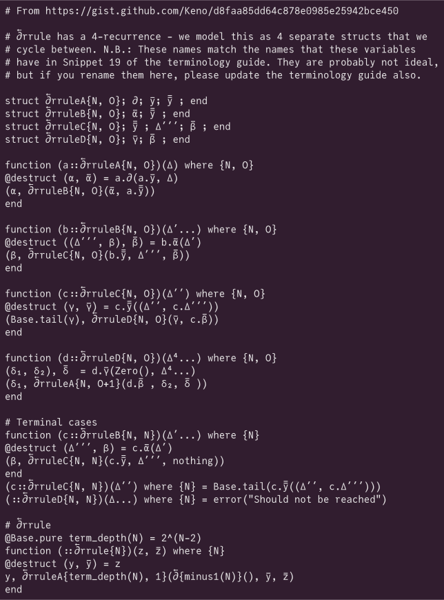

Math symbols in monospace fonts
Extra samples (see here for the main page).
Renderings were generated on Linux using HarfBuzz
(hb-view) with the ot shaper. Click a sample
to see the plain (UTF-8) text.
Use the left pane to change the font.
Current font:
(version ).
